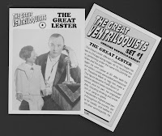
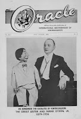
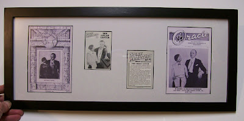

For 24 hours, Everyone was a winner!
1/6/2010
January 6, marked the anniversary of the "Great Lester's" arrival in America as an infant. The year was 1881. Lester began his vent career at the age of 20 (1901) and his impact on vent history was in many ways equal to that of one of his better known students, Edgar Bergen.
This one-of-kind piece of ventriloquist history was awarded (along with the other item or items won) to the person who came closest to guessing the number of people who will responded to the Great Lester give away. Not every person chose to participate for this prize, but the majority did so, and of the winner was (to be announced 1/8/10).
I spent several hours last week rereading hundreds of pages of correspondence between past century ventriloquists including: Judge Frank Carter, Madame Pinxy, W.S. Berger, Great Lester, Edgar Bergen, Frank Marshall and several dozen others. So fascinating and insightful it was to step back in time in that manner! I was once again reminded of how much we vents of today's era owe to those who paved the way - arguably, none no more so than the Great Lester.
So in his honor on January 6, for a period of 24 hours, I offered a FR
{kind=link}

EE "Lester themed" gift to every person who responded to this post!Thanks to the generosity of M.A. Denemark, every respondent wasl sent one new genuine (not a copy) Great Lester Collector Card from The Great Ventriloquist series (card #2). This rare out-of-print card has Lester's picture on the front with "Frank Byron, Jr.", and a brief biography on the back.
{kind=link}

In addition, every sixth (6, 12, 18, 24, etc.) person receives a Collector Card, PLUS a copy of a 1960 issue of The Oracle ventriloquist 12 page newsletter with the Great Lester on its cover. (What a treat to browse these pages of news from half century past!)
There's was MORE! Every person then had a chance to win a one-of-a-kind framed Great Lester wall display (photo below). Featured on this large attractive 11"x 21" framed unit are photo cover reprints of a very rare 1921 issue of The Magic World on which The Great Lester was the cover feature, and the cover page of the aforementioned 1960 Oracle. Plus two Lester collector cards (showing both front & back sides)!
This one-of-kind piece of ventriloquist history was awarded (along with the other item or items won) to the person who came closest to guessing the number of people who will responded to the Great Lester give away. Not every person chose to participate for this prize, but the majority did so, and of the winner was (to be announced 1/8/10).

*One entry per person. Every respondent will be notified of their entry's position by letter with their gift or gifts. Please note: This 24 hour give-away has ended. However, I will continue with 2-3 give-aways each week (on average), so return to visit this blog often!
Nothing to buy, no obligation. As with all gift give-aways on this blog, they are simply my personal thank you to an amazing vent community which has provided my family's livelihood for more than 40 years. Clinton D.